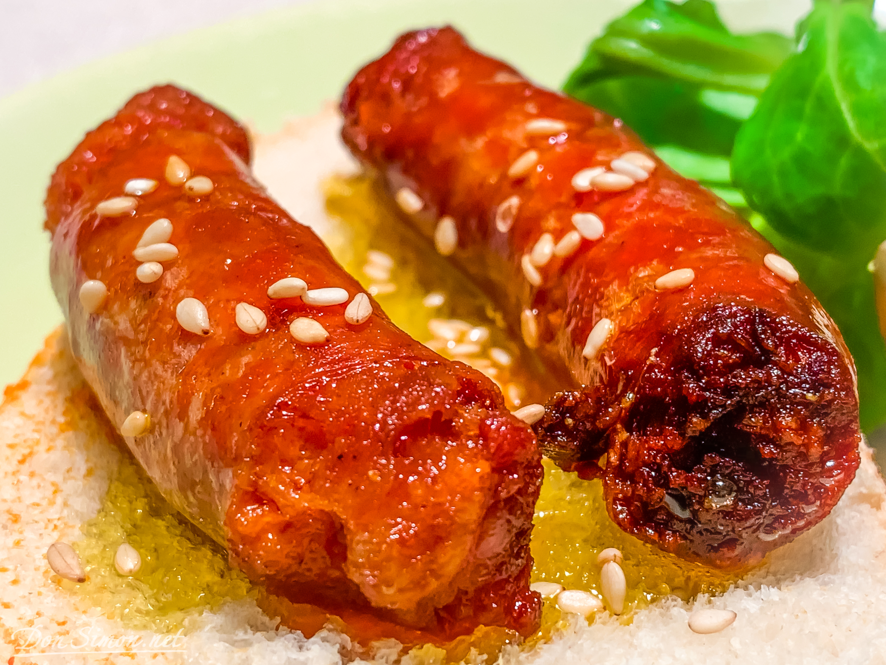

Fino embutido preparado con aceite de olivo y vino blanco
Pulpo a la Gallega con Cachelos (180 Gr)
Plato típico Gallego, preparado a base de pimenton, aceite de olivo y sal de grano
Sopas
Jugo de Carne
Preparado a base de jugosa carne seleccionada, sazonado con finas hierbas, especias y jerez de la frontera, se acompaña de cebolla y chile serrano.
Ensaladas
Ensalada de Tomate con Queso de Cabra
Frescas rebanadas de tomate aderezadas con vinagreta de balsámico y orégano aliñadas con queso de cabra, cebolla y alcaparra.
Platos Fuertes
Solomillo Compostelano (200 Gr)
Corazón de filete con queso brie, asado al carbón, acompañado al pimiento rojo y cachelos
Arrachera (250 Gr)
Excelente carne marinada, asada al carbón y acompañada de papa gratinada, guacamole y frijoles refritos
Salmón a la Rubio (220 Gr)
Jugoso lomo de salmón asado y macerado con gulas al pilpil, preparadas con olivo y chile guajillo, acompañado de jugosos cachelos de papa al toque de pimentón
Bebidas
Limonada de Verano
Cerezas, limón, jarabe natural, hierba buena y agua mineral
Marqus de Riscal ABA
D.O. CA. Rioja | Tempranillo | 750 ml
Postres
Helado de Turrón
Una verdadera delicia al paladar es la combinación de turrones de Jijona preparados con leche, azúcar y vainilla